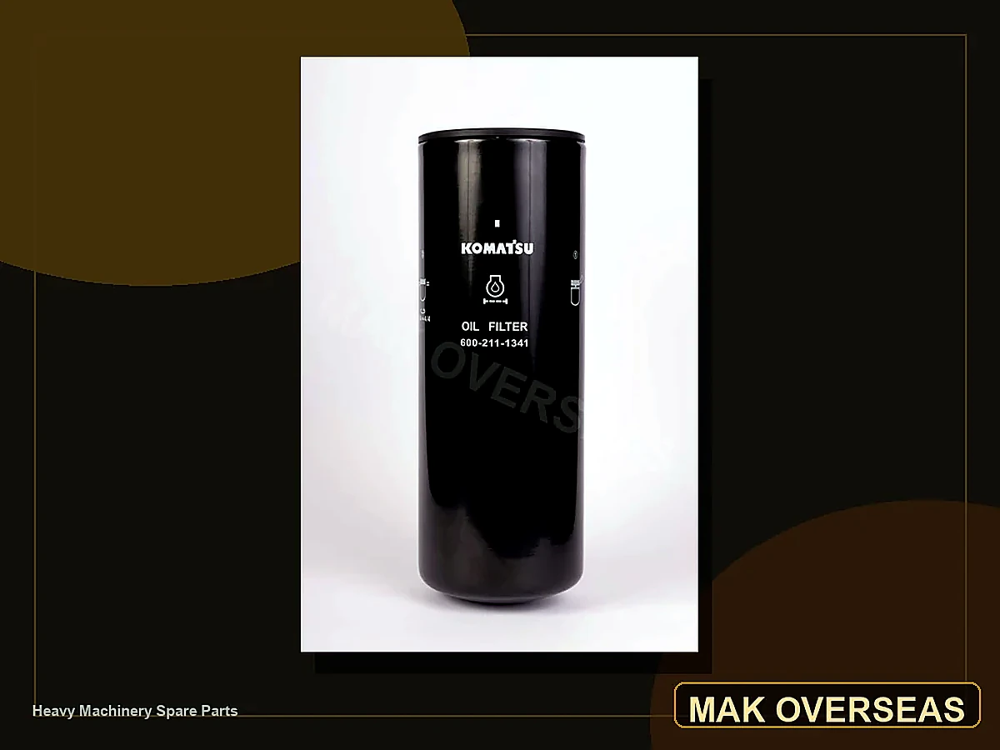

Back to MAK Filters
Komatsu Filters
Komatsu OEM filter references for excavator, bulldozer and heavy equipment service support.

Use search for Komatsu references like 600-211-1341, 6002111341, 07063-51100 and other OEM filter numbers.
Komatsu OEM filter references for excavator, bulldozer and heavy equipment service support.
